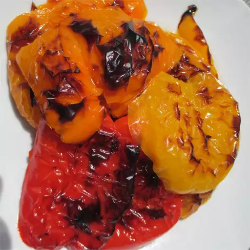

Roasted Red Pepper

How to Roast Peppers
Roast in oven until the skin blisters
There are plenty of delicious ways to put these easy roasted peppers to good use!
Toss them in olive oil and balsamic vinegar for a quick and easy appetizer.
Stir them in meaty pasta sauces for a fun burst of flavor.
Fold them into scrambles eggs or omelets for a pop of nutrient-rich flavor and color.
Ingredients
- Medium sized bell peppers
- 2 tablespoons olive oil
Steps
- Preheat oven to 500 degrees
- Coat baking dish with olive oil
- Roast in oven, 30 - 40 minutes, until skin blisters
- Remove from oven and cover with plastic for 20 - 30 minutes
- Peel and discard skins